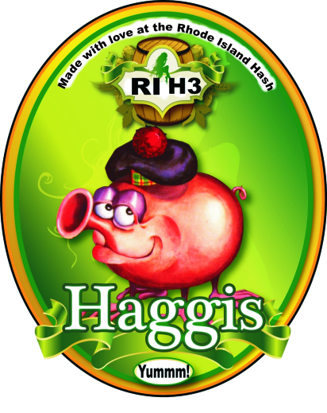
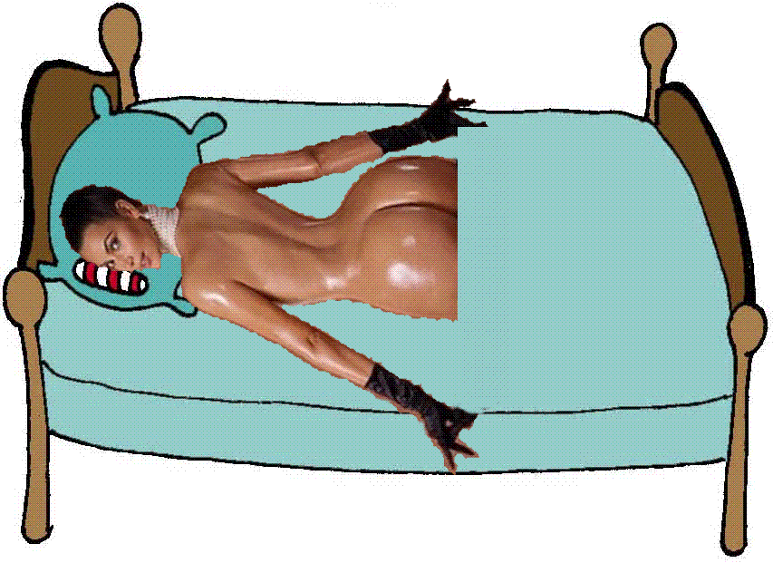

Note: Upcumming runs are assigned in more or less random order. If you want to switch weeks, or would like to be added to the hareline, or offer the Trailmaster sexual favors, contact Basket Boom Boom.
Last Updated:
Apr 26, 2026
If you're looking to do something completely different, a few of us meet on Wednesday at the Rock Gym in Lincoln and may climb over the weekend nearby or in New Hampshire.
| Date: | Time: | Run | Hare: | Directions: |
| May 1-4 | see below | 2097 |
Hairy Kirschner

and Amish Ithead |
See the RIH3 facebook Page for updates |
| Mon. May 4 | 6:30 PM | 2097 |
Hairy Kirschner
and Luxury Box |
See the RIH3 facebook Page for updates |
| Mon May 11 | 6:30 PM | 2098 |
Crotch Tiger
Pussy Galore Theme Song of the Week: Bring me some whisky mother |
The Ladies of the RIH3 HashHer Song of the Week: the Cucumber Song See the RIH3 facebook Page for updates |
| Monday May 18 | 6:30 PM | 2099 |
Hym Wrng Gye |
Hym Wrng Gye's Virgin Trail HashSee the RIH3 facebook Page for updates |
| Mon May 25 | 6:30 PM | 2100 |
OOzing Syph
|
, The Rhody Hash makes it to 2100 On the Thanks for the Mammories HashMaybe an afternoon trail? Her Song of the Week: Twas A Cold Winters Evening See the RIH3 facebook Page for updates |
| Mon. June 1 | 6:30 PM | 2101 |
Shemale Wait! I'm not dead yet!  |
Shemale's HashHope he doesn't send us down the rabbit hole again.His Song of the Week: Bring me some whiskey mother See the RIH3 facebook Page for updates |
| Mon. June 8 | 6:30 PM | 2102 |
WIPOS
BBB Song of the Week: Dr. WHO ? Well I'll tell ya Ronnie Hawkins' Mary Lou |
Song of the Week: WHO killed Cock Robin See the RIH3 facebook Page for updates |
| HARELINE DOGHOUSE: | ||
|
A Tird in the Beaver |
So we were all quite happy when Wee B's moved to Austin. Didn't have to put up with his shitty trails under highways where even he wouldn't go. But he was lonely and missed his Wanking friends in RI, so he invited the Tird in the Beaver to go join him. I say good riddence to the whole bota dem. | |
|
Wee Balls |
You know he complained about not being in the dog house so often, and I'm not one to move someone just because he asked for it, but it's plain to see he deserves to be somewhere since he's not in Rhode Island anymore. Wee Balls has moved back to Texas. He's not going to be laying flour here anytime soon, so he is in the Dog House until he cums back to his senses. | |
|
Next Week/Alpacalips Now |
Next Week moved to the slums in Westerly and thought bringing with him a pretty face would protect him from the gangstas. He's asked to be put into the Dog House until she convinces him to sell, make a profit and move back to civilization.. | |
|
Sleeping Booty and her 7 Toys  |
Sleeping Booty grabbed her toys and skipped out on us. I've been looking for her, but with little luck. She's lost so much weight you canardly catch a glimpse of her now, since she's become a professional street walker. She said she works for the government, but we've heard that story before from Shemail Man. | |
|
Justin Myass |
After a short hiatus, JIMA is back in the doghouse. He is lost in his books, and seems like he doesn't have time to do much else these days. He's got to learn one thing...Life is too short! | |
|
Thats-a-Mouthful |
So Mouthful thinks flying planes in warmer climates is better than running in shiggy in the cold dark New England evenings whilst enjoying good beer. Such a shame... he was just getting good at setting sh*tty trails. | |
|
Dry Foot Fairy |
Apparently, Dry Foot had to move to New York City to get laid. | |
|
Trail Hoover (SESYB) |
OK Boys and Girls.... time to dust off that porn collection. | |
|
Great at Giving Head |
Apparently, G@GH found better opportunities outside Rhode Island. Too bad he'll never find better beer. | |
|
Async |
Until he shows himself again, he's back in the doghouse. | |
|
Tinker |
Tinker is stuck in a snow drift in Pig Iron, NH and is trying to get a snow cat to catch his plane to Southeast Asia hashing with the Thai's. Good Luck and God bless that lucky Wanker! | |
|
Cum Under PSHS |
She may be gone, but our ears will still be ringing for years to come. Thus, did she really leave? | |
|
Dick Doc |
Double D decided to leave us for warmer climates, rumored to be somewhere in Arizona. Those Canadians could never handle the New Engand winters and good beer. | |
|
Evil Bitch Ripta
|
EB has once again succumbed to the siren call of lite beer and bowling. | |
|
Swallows My Pride
|
The Good Doctor has gone Bad. | |
|
Raging Queen of Beers
|
Raging is AWOL somewhere in the Land of Teddy Kennedy and John Kerry | |
|
Birdbrain
|
Birdbrain is currently whining with some lame exuse about working on a doctoral thesis. When will you people learn? Repeat after me. The Hash Is My Life! | |
|
EverReady
|
Our Hash Soccer Mom was suffering from terminal responsibility and respectability. Ever since she also became afflicted with the M-word, she's become a lost cause. Someone has to darn KNO's socks, right? |
|
|
Short Peck
|
Apparently, Mr. Peck has determined he has a better chance of getting laid in the Granite State. (Yes, even Jake turned him down). |
|
|
Snot
|
Snot's performance as a Rhode Island hare was so abysmal that we sent him packing back to the UK. He'll be allowed back on the hareline when he either (1) recruits Elizabeth Hurley to the Rhode Island Hash or (2) provides sexual favors to Jake. |
|